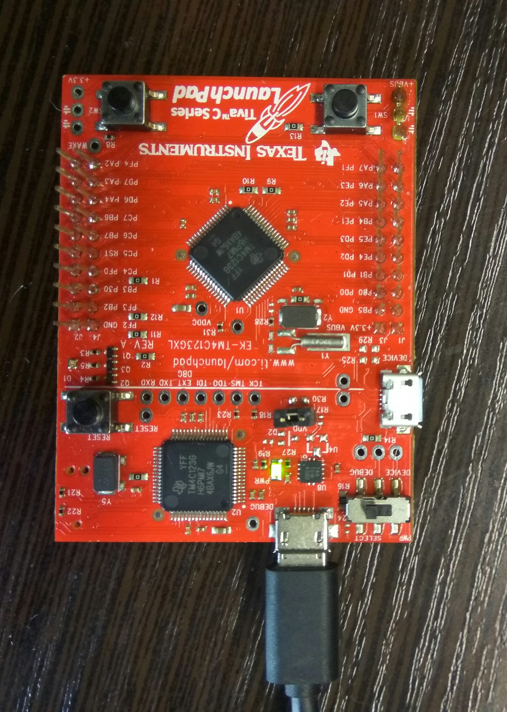

TI TM4C123G LaunchPad blinky¶
| Location: | examples/tm4c_led |
|---|---|
| Target: | Tiva C Series TM4C123G LaunchPadEvaluation Board |
| External HW: | none |
| Toolchain: | GNU arm-none-eabi v.5.2 or newer |
| Additional SW: | UniFlash, minicom |
Wiring¶
No special wiring is required. Just connect the board to the powered USB port.
Below is the board image showing simple USB connection.
Building¶
Complete Initial setup section.
Execute build commands. The CMake Toolchain file is required to build this application. theCore already has one suitable for this target.
mkdir build cd build cmake -DCMAKE_TOOLCHAIN_FILE=../../toolchains/arm-cm4-gnu.cmake .. make
Running¶
Flash firmware via UniFlash. The UniFlash interface is straightforward.
Launch
minicomwith device associated with the board. (/dev/ttyACM0here used as an example):# From new terminal minicom -D /dev/ttyACM0
Target JSON config for the TM4C LED example¶
{
"platform": {
"name": "tm4c",
"device": "TM4C123GH6PM",
"console": "UART0",
"uart": [
{
"id": "UART0",
"comment": "UART-over-USB console output"
}
],
"pinmux": [
{
"ids": [ "PF1", "PF2", "PF3" ],
"dir": "out",
"pin_type": "std",
"strength": "2mA",
"comment": "LED pins"
},
{
"ids": [ "PA0", "PA1" ],
"dir": "hw",
"hws": { "PA0": "UART0_RX", "PA1": "UART0_TX" },
"comment": "UART0 console pins"
}
],
"gpio_alias": [
{
"id": "PF1",
"alias": "led_red",
"comment": "Red LED"
},
{
"id": "PF2",
"alias": "led_blue",
"comment": "Blue LED"
},
{
"id": "PF3",
"alias": "led_green",
"comment": "Green LED"
}
]
}
}
On-board LED will blink with the different (RGB) colors.